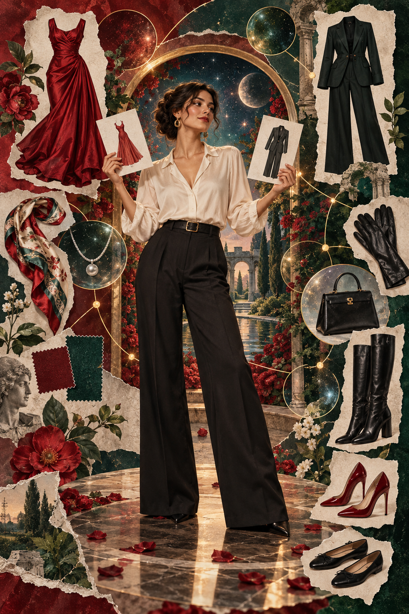

Ich wähle, kombiniere und ändere. Ein Ja gehört zu genau dieser Wahl und diesem Moment.
PORTAL 09 · MODE / WAHL / COLLAGE
Was du trägst, darf sich nach dir anfühlen.
Kleidung kann einen Menschen ausdrücken. Sie beweist niemals Zustimmung, Verfügbarkeit oder Charakter. Dieses Atelier macht Kleider, Anzüge, Dessous, Schuhe, Stiefel, Schmuck und Accessoires zum Material einer Wahl, die du selbst steuerst.
Originale BildweltenLokale VerarbeitungKein Konto nötig

DIE GESTALTUNGSREGEL
Ein Kleidungsstück ist eine Option. Ein Mensch ist nie ein Produkt.
Eine Bitte kann frei beantwortet werden. Schweigen, Kleidung und ein Bild beantworten sie nicht.
Es braucht keine Rechtfertigung. Ablehnung mindert weder Würde noch Talent noch Zugehörigkeit.
LOCAL COLLAGE LAB
Bau dein eigenes Portal.
Wähle bis zu acht Bilder von deinem Gerät. Der Browser ordnet sie nur im Arbeitsspeicher an und exportiert ein PNG. Diese Seite lädt nichts hoch, speichert nichts und analysiert die Dateien nicht.
1 · Deine Bilder
2 · Anordnung
3 · Format
4 · Farbe und Worte
CHOICE, NOT ASSUMPTION
Gib jede Anfrage an den Menschen zurück.
Tippe eine Karte an, um sie durch drei Positionen zu bewegen. Der Zustand gilt nur in dieser Seitenansicht und sagt nichts über andere Personen aus.
PINTEREST / TECHNICAL CHECK
Was die Quelle tatsächlich trägt.
Die Live-Seite und offizielle Dokumentation wurden am 14. September 2026 geprüft. Der angehängte Screenshot gehört zu µTorrent Web, einer getrennten Anwendung.
Web-App, keine EXE und kein PDF
Der Pinterest-Composer wird in Chrome als HTML und JavaScript ausgeliefert. Er hat Ebenen, Freisteller, Bildupload, Text- und Zeichenwerkzeuge. „Im Browser ausführbar“ funktioniert als Vergleich, nicht als Dateityp.
Veröffentlichen ändert den Rechtekontext
Nutzende behalten ihre Rechte an eingestellten Inhalten. Die Bedingungen verlangen die nötigen Rechte oder eine anwendbare gesetzliche Ausnahme und geben Pinterest eine breite Plattformlizenz. Für bestimmte öffentliche Inhalte dokumentiert Pinterest einen Opt-out für Canvas-Training.
Shopping-Links sind getrennt
Produktfreisteller können Preis, Verfügbarkeit und Händlerlinks tragen. Diese Produktfunktionen betreffen Waren und machen weder eine abgebildete Person noch ihre Zustimmung oder Identität zu einem kaufbaren Gegenstand.
Keine Pinterest-Torrentfunktion
In der sitzungsgebundenen Composer-Beobachtung und in der offiziellen Collage-Dokumentation erschien keine Magnet- oder Torrentfunktion. Der Magnet unten gehört ausschließlich zum originalen HALVETH-Downloadpaket.
Pinterest Help · Create a collage ↗Pinterest Terms ↗Pinterest Privacy ↗Pinterest GenAI settings ↗Vollständige Forschungsnotiz ↗Quellenregister ↗
OPEN PACKAGE / v1.0.0
Ein Paket. Drei Wege hinein.
Das ZIP enthält ausschließlich das neue originale Ateliermaterial und seinen Quellenbeleg. Torrent und Magnet bezeichnen genau diese Paketbytes. Sie beweisen weder Urheberschaft, weitergehende Rechte, einen Entstehungszeitpunkt noch aktive Verfügbarkeit durch einen Peer oder Webseed.
magnet:?xt=urn:btih:8db1daf5dcc8792148db7c512fb22c42f6ebaab4&dn=HALVETH-Choice-Atelier-1.0.0.zip&xl=6534015&ws=https:%2F%2Fjuri-halveth.github.io%2Fhalveth-scarlet%2Freleases%2Fchoice-atelier-v1.0.0%2FHALVETH-Choice-Atelier-1.0.0.zip